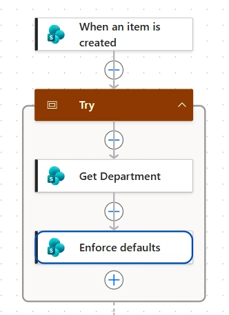
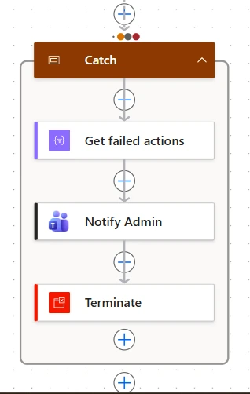
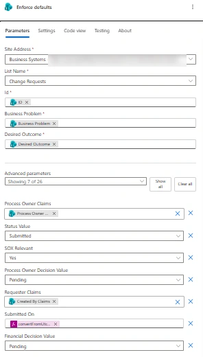
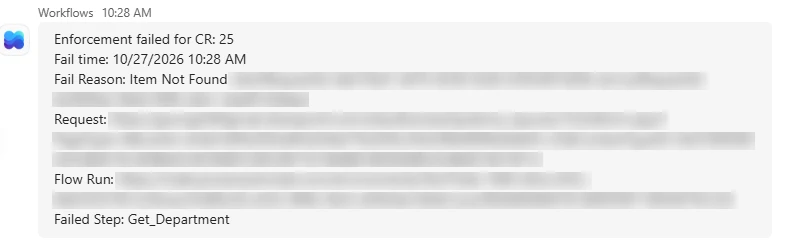

Power Automate · SOX change control · Error handling · Lumen Photonics lab
Approach highlighted
Forms shape behavior; flows enforce it. A flow resets protected fields on every new request, and a try/catch pattern makes sure the control can never fail silently.
Project Summary
Change requests at Lumen Photonics route to approvers based on fields like Status, SOX Relevant and Process Owner. If a requester could set those themselves, they could mark a costing change as not SOX relevant and skip financial review, or pick a friendly approver. SharePoint has no column-level permissions, so hiding those fields on the form only prevents honest mistakes. This flow is the actual control.
Why the Form Isn't Enough
The requester form was trimmed to the eight fields a requester should fill in, and testing as a requester confirmed that grid view is read-only for them too. One route remained: anyone who can add items can create one through the API, a Power App or their own flow, and set any value they like. Only a flow that runs on every new item covers that.


What the Flow Enforces
The flow triggers on item created, not created or modified, because it updates the same item and would otherwise trigger itself in a loop. It looks up the request's department, then overwrites the protected fields with values the requester can't influence.
| Field | Set to | Why |
|---|---|---|
| Status | Submitted | A request can't arrive already approved |
| SOX Relevant | Yes | Fail-safe default; only Business Systems can change it during triage |
| Process Owner | The department's process owner | Requesters don't choose their own approver |
| Approval decisions | Pending | Only the approval flow writes decisions |
| Requester | Created By | Recorded by SharePoint, so it can't be spoofed |
| Submitted On | Created date, in local time | Recorded by SharePoint, not typed in |
// Look up the department row the request points at (the lookup's ID, not the request's)
triggerBody()?['Department/Id']
// Requester comes from who actually created the item
triggerBody()?['Author/Claims']
// Created is stored in UTC; convert before keeping only the date
convertFromUtc(triggerBody()?['Created'], 'Pacific Standard Time', 'yyyy-MM-dd')
Bugs Found in Testing
Testing as a requester turned up three bugs, each one a quiet error that a run marked "Succeeded" wouldn't reveal:
Failing Loudly
If the flow fails, the request keeps whatever values it was created with and the control fails open. Nobody watches run history, so the Catch scope posts an alert to Teams with everything needed to fix it without opening the flow: the request ID and link, the time, the failed step, the error message and a link to the run.
// Collect the actions inside Try that failed
filter: result('Try') where item()?['status'] = 'Failed'
// Error text lives in different places depending on the action
coalesce(first(body('Get_failed_actions'))?['error']?['message'],
first(body('Get_failed_actions'))?['outputs']?['body']?['message'],
'Unknown error')
// Link straight to this run
concat('https://make.powerautomate.com/environments/', workflow()?['tags']?['environmentName'],
'/flows/', workflow()?['name'], '/runs/', workflow()?['run']?['name'])Two details make the alert trustworthy. The message is built only from the trigger and the failure details, never from outputs of the steps inside Try, because the step that failed may have returned nothing. And Catch ends with a Terminate set to Failed, so a handled failure still shows as Failed in run history instead of Succeeded.

Testing the Failure Path
The alert was tested by breaking the flow on purpose: the department lookup was pointed at a row that doesn't exist, and a requester submitted a new request. The alert arrived, the run showed Failed, and the request was left unenforced, exactly the state the alert warns about. After restoring the lookup, resubmitting the failed run enforced the request and confirmed the fix in one step.
What I'd Change in Production
The flow writes with a personal connection, so every correction shows a person's name in version history. In production it would run under a service account through the solution's connection reference, so the audit trail reads as the system. The alert would also post to a Business Systems Teams channel instead of one person's chat, so failures still reach someone when that person is out.
Skills Demonstrated
Power Automate cloud flows, SharePoint triggers and lookups, workflow expressions, try/catch error handling with scopes and run-after settings, Teams notifications, time zone handling, solution-aware flows, SOX-aligned control design, and testing failure paths as well as success paths.
More from the Lumen Photonics lab